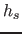
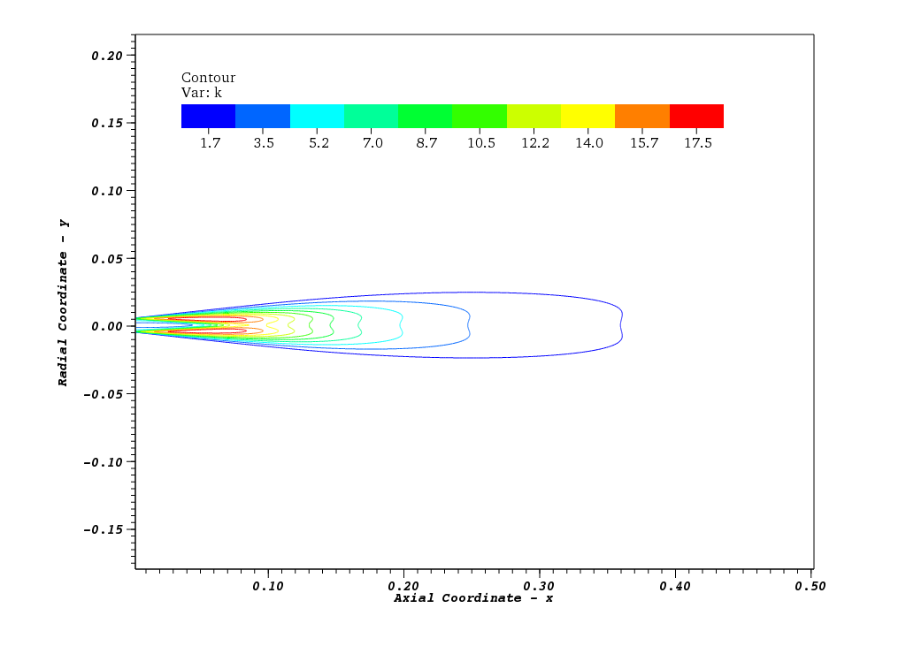

Next: Links Up: lowmachSolver: a low Mach Previous: Running
This is the test case used to provide results for the thesis. It consists of the numerical simulation of the experiment performed by [1] in Sydney University.
http://dx.doi.org/10.1016/j.ijmultiphaseflow.2005.09.002
Case folder structure
--- case
+-- 0 initial and boundary conditions
+-- chemkin chemkin files
+-- constant mesh and physical properties
+-- system solution parameters
Iinitial conditions of the gaseous flow were obtained by simulating only the gas flow in ../cases/sydney/ic.fine/ and ../cases/sydney/ic.coarse/.
thermoType hsPsiMixtureThermo<reactingMixture<gasThermoPhysics>>;
hsPsiMixtureThermo computes enthalpy for combustion mixture based on sensible enthalpy  and compressibility  .
reactingMixture is a combustion mixture using thermodynamics and reaction schemes.
gasThermoPhysics is a type definition for
.
reactingMixture is a combustion mixture using thermodynamics and reaction schemes.
gasThermoPhysics is a type definition for sutherlandTransport<specieThermo<janafThermo<perfectGas>>>.
ignite off;.
chemistry off; is what matters.
The time step for integrating droplet equations is the minimum between momentum and heat transfer characteristic times divided by subCycles. dtInjection was added to limit the number of parcels in the domain: only one parcel is added during the specified time interval.
subCycles 2; dtInjection 1e-9;
Atomization is modeled statistically by the pdf function and no physical modeling is used.
atomizationModel off;
Since acetone is a highly volatile fuel, droplets are more likely to evaporate before undergo secondary break-up instabilities.
includeOscillation off; //breakupModel TAB; //breakupModel ETAB; //breakupModel ReitzDiwakar; breakupModel off;
The injector type is set.
injectorModel hollowConeInjector;
Collision model is not used since the spray is dilute. Evaporation, heat transfer, drag and droplet dispersion is modeled as discussed in [5].
collisionModel off; evaporationModel standardEvaporationModel; heatTransferModel RanzMarshall; dispersionModel stochasticDispersionRAS; dragModel standardDragModel;
Added the lognormal pdf to the available pdfs. It is used to sample droplet diameter for injection.
hollowConeInjectorCoeffs
{
dropletPDF
{
pdfType lognormal;
}
}
Basic information about the spray and execution timing followed by extremal values of temperature, density and dynamic pressure.
Number of parcels in system.... | 29921 Injected liquid mass........... | 6.05092 mg Liquid Mass in system.......... | 0.522468 mg SMD, Dmax...................... | 16.0027 mu, 42.7612 mu ExecutionTime = 102.28 s ClockTime = 104 s T max/min : 298 275.949 rho max/min : 1.28461 1.1644 pd max/min : 100000 99966.9
Mass flow rates trough defined patches (walls are being called as such, but they are actually the far boundary).
Courant Number mean: 0.00232359 max: 0.242796 MassFlows: nozzle = -3.43682e-05 coflow = -0.000852618 outlet = 0.00100765 walls = -0.00012141 Time = 0.330113
The following lines show the sequence equations are solved: first spray is updated, then all transport equations are solved. "Solving for rho" presents zero residual and iterations because it is being explicitly solved.
Evolving Spray Solving chemistry diagonal: Solving for rho, Initial residual = 0, Final residual = 0, No Iterations 0 DILUPBiCG: Solving for Ux, Initial residual = 5.77748e-07, Final residual = 5.2592e-09, No Iterations 1 DILUPBiCG: Solving for Uy, Initial residual = 2.6999e-05, Final residual = 7.62742e-11, No Iterations 2 DILUPBiCG: Solving for Uz, Initial residual = 5.88654e-05, Final residual = 7.16722e-08, No Iterations 1 DILUPBiCG: Solving for aC3H6O, Initial residual = 3.79856e-07, Final residual = 8.03328e-10, No Iterations 1 DILUPBiCG: Solving for O2, Initial residual = 3.88094e-07, Final residual = 3.96676e-10, No Iterations 1 DILUPBiCG: Solving for CO2, Initial residual = 0, Final residual = 0, No Iterations 0 DILUPBiCG: Solving for H2O, Initial residual = 0, Final residual = 0, No Iterations 0 DILUPBiCG: Solving for hs, Initial residual = 5.01197e-07, Final residual = 1.08758e-09, No Iterations 1
The following step is the PISO loop, which might be repeated more than once (I used 3 to 5 loops).
DICPCG: Solving for pd, Initial residual = 0.0447168, Final residual = 9.75726e-10, No Iterations 185 diagonal: Solving for rho, Initial residual = 0, Final residual = 0, No Iterations 0 time step continuity errors : sum local = 3.66451e-16, global = -2.59971e-18, cumulative = -7.82325e-16
For last, solution of k-epsilon equations.
DILUPBiCG: Solving for epsilon, Initial residual = 5.26145e-07, Final residual = 5.43398e-10, No Iterations 1 DILUPBiCG: Solving for k, Initial residual = 1.22238e-07, Final residual = 1.64783e-10, No Iterations 1
|
|
|

|
Rodrigo 2011-12-25